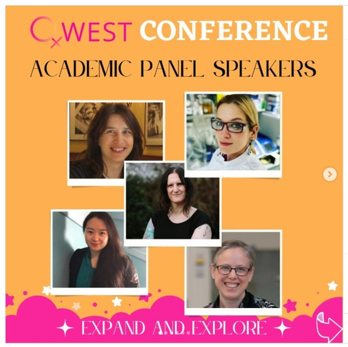

Talks
Talks and public engagement
24 conferences and workshops, 20 of them oral presentations. Slides are available on request.
Selected talks
| Date | Talk | Venue |
|---|---|---|
| 2026 | From Materials to Motion: Engineering a Robotic Arm and Exploring Digital Integration (with J. S. Law) | Department of Materials, University of Oxford |
| Oct 2026 | Battery innovation in LEO megaconstellations and its economic impact (with O. Karasu; accepted) | International Astronautical Congress, Antalya |
| Sep 2026 | Powering the Orbital Circular Economy: A Strategic Vision for Serviceable Space Energy Storage | Faraday Institution Conference, Nottingham |
| May 2026 | Modular, serviceable and demisable small satellites (with M. Curtis-Rouse and M. Sims) | SmallSat Europe, Amsterdam |
| 2025 | Ethical frontiers in the international battery industry, with the Faculty of Philosophy (invited) | 247th ECS Meeting, Montreal |
| Nov 2023 | Mapping lithium-ion concentration gradients across battery cathodes | 64th Battery Symposium in Japan, Osaka |
| 2023 | Invited talks | NIMS and AIST, Japan; University of Birmingham; National Physical Laboratory |
| Nov 2022 | Visualising lithium-ion distribution in solid-state batteries by plasma FIB-SEM, EDS and SIMS | International Bunsen Discussion Meeting on Solid-State Batteries, Frankfurt |
| Nov 2021 | Lithium-ion battery electrodes and their morphology characterisation via plasma FIB, EDX and SIMS | Faraday Institution Conference |
| Nov 2021 | Schwarz-Primitive-structured CNF electrodes via 3D-printed wax templating | International Battery Production Conference, Braunschweig |
Public engagement
- 2026: Oxford Expert Comment on space sustainability
- 2025: invited Christmas Lecture, Institute of Physics; Alternative Natural Philosophy Association conference, Oxford; nominated, University of Oxford PCER Celebration and Recognition Scheme
- 2024: invited lecture 'Is the battery really THAT powerful?', Institute of Physics; UNIQ summer school, Department of Materials; Alternative Natural Philosophy Association conference, Oxford
- 2023: Soapbox Science London invited talk with the 'Ion Dance' demonstration, more than 750 visitors; Researcher Spotlight, Faraday Institution, as one of the inspiring women in the Faraday community
- 2022: Soapbox Science London; Henry Royce Institute 'Meet the Researcher' talk on visualising lithium-ion distribution by plasma FIB-SIMS (LinkedIn post); designed the technical challenges for, and presented at, the Royce PhD Research Sandpit (Manchester); Royce public engagement in Oxford and Manchester
- 19 public engagement talks across the UK since 2021

Entrepreneurship and community
Founder and CEO of Oxford Robotics and Additive Manufacturing Group Ltd. Long-time lead of the OxRAM robotics society, with six robotics projects and open-access code. Reviewer for UKRI, the Faraday Institution and the Canada Foundation for Innovation.